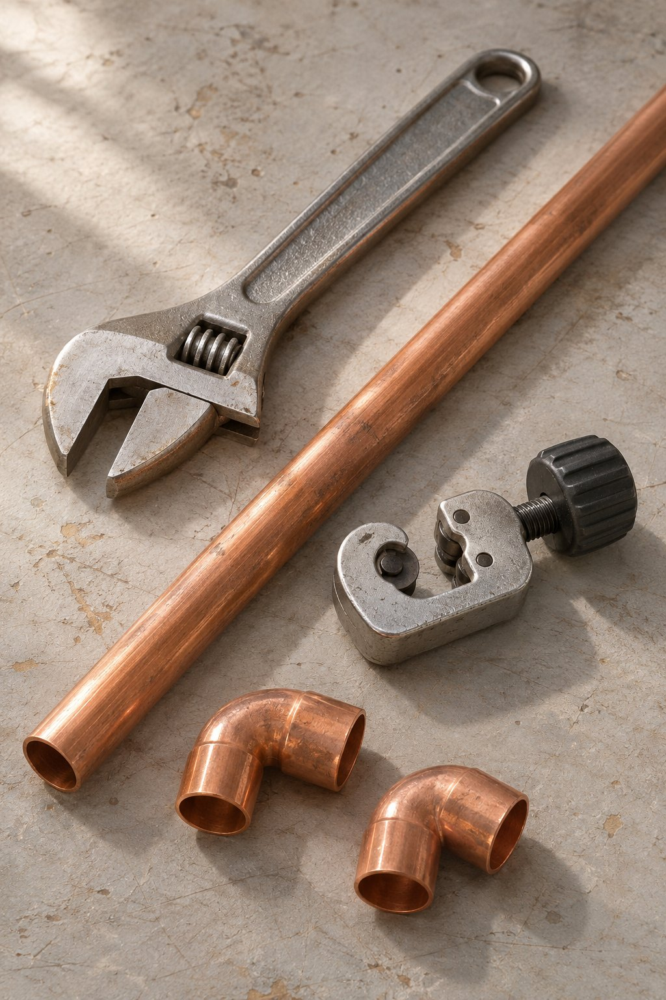

Flow / Water systems
El oficio de
conectar.
Fontanería Chacón.
Material, precisión y oficio.
01 / Fontanería Chacón
Un oficio.
Muchas conexiones.
Fontanería Chacón.
Una identidad ligada al agua
y a los materiales del oficio.
Para conocer los servicios concretos y consultar información sobre la actividad, contacta directamente por teléfono.
Ir al contactoUn recorrido, de principio a fin.
MateriaConexiónRecorrido
Recorrido sin destacar.
Ilustración gráfica. No es un esquema de una instalación real.

02 / El universo del oficio
La precisión
está en
el detalle.
El cobre, las uniones y las herramientas dan forma al lenguaje visual de la fontanería.
01 / Cobre02 / Conexiones03 / Herramientas
Una mirada ilustrativa a los materiales del oficio. Estas imágenes no se presentan como trabajos realizados por Fontanería Chacón.
03 / Contacto directo
Conectamos
por teléfono.
Para consultar los servicios, la disponibilidad o la ubicación, utiliza el contacto telefónico.